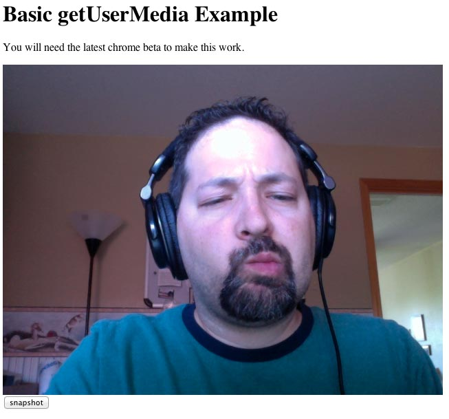
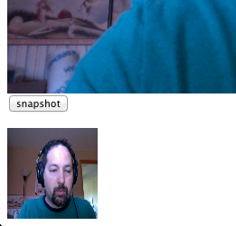
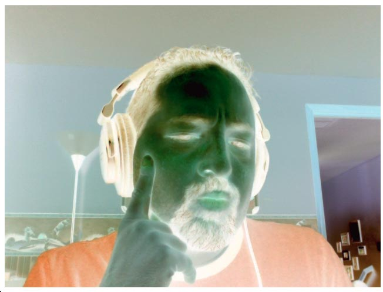
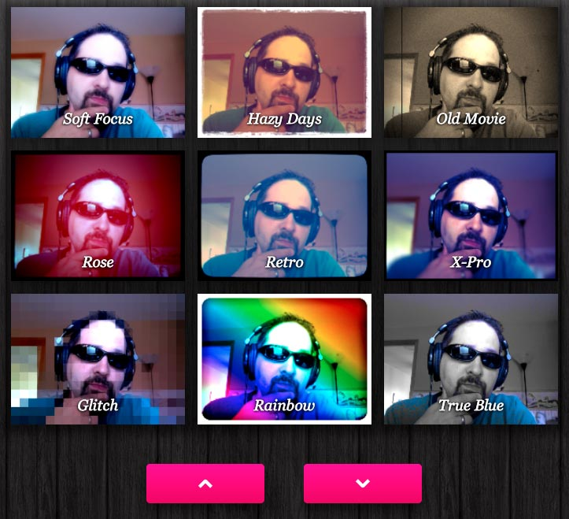
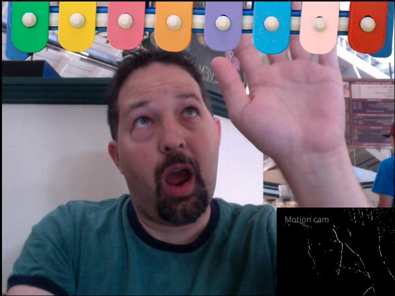

Доступ к веб-камере через getUserMedia()
getUserMedia
Исторически единственным способом взаимодействия с локальными ресурсами в Интернете является загрузки файлов. Единственные локальные устройства с которыми вы можете действительно взаимодействовать — это мышь и клавиатура. К счастью, это больше не так. В предыдущей главе мы видели как управлять аудио. В этой главе мы поговорим о веб-камере пользователя.
Прежде всего хочу подчеркнуть, что всё это ещё альфа-версия. API для разговора через локальные устройства неоднократно менялись и, вероятно, будут меняться не раз, прежде чем они станут стандартом. Кроме того только десктопная версия Chrome и Opera имеет реальную поддержку для разговора через веб-камеру. Практически нет поддержки на смартфонах. Используйте эту главу как способ увидеть что наступит в будущем и получите удовольствие играясь с кодом, но ни в коем случае не используйте в рабочем коде. Как упоминалось, давайте повеселимся!
У доступа к локальным устройствам с веб-страницы длинное и пёстрое прошлое. Традиционно это было прерогативой только плагинов, таких как Flash и Java. Ситуация во многом изменилась несколько лет назад. Группа WebRTC нацелилась разрешить коммуникацию в реальном времени в Интернете. Подумайте о видео-чатах и прямой трансляции концертов. Одним из необходимых компонентов для этого выступает доступ к веб-камере. Сегодня мы можем сделать это используя navigator.getUserMedia().
Я собираюсь показать вам метод, который работает в последней версии Chrome. Более надёжное решение показано в этой статье на HTML5 Rocks. Также обратите внимание, что getUserMedia не будет работать с локальными файлами. Вы должны запускать всё на локальном веб-сервере.
Для начала нам потребуется элемент <video> на странице. Там будет выводиться веб-камера.
<video autoplay></video>Чтобы получить доступ к веб-камере, мы должны вначале посмотреть, есть ли поддержка через navigator.webkitGetUserMedia != null. Если существует, тогда мы можем запросить доступ. options определяет что нам требуется: аудио, видео или и то и другое. На момент написания статьи только аудио не работает в Chrome.
if(navigator.webkitGetUserMedia!=null) {
var options = {
video:true,
audio:true
};
// запрашиваем доступ к веб-камере
navigator.webkitGetUserMedia(options,
function(stream) {
// получаем тег video
var video = document.querySelector('video');
// включаем поток в магический URL
video.src = window.webkitURL.createObjectURL(stream);
},
function(e) {
console.log("error happened");
}
);
}При вызове webkitGetUserMedia открывается диалоговое окно, в котором пользователя спрашивают, если наша страница может получить доступ. Если пользователь одобряет, тогда вызывается первая функция. Если возникли какие-либо проблемы, то будет вызвана функция ошибки.
Теперь у нас есть поток, который мы можем присоединить к элементу <video> на странице, с помощью магического URL через webkitURL.createObjectURL(). После подключения элемент <video> покажет живой вид с веб-камеры.
Вот как это выглядит:

Простая веб-камера
Создание снимка
Теперь у нас есть живой поток веб-камеры, но что мы можем с этим сделать? Когда это происходит, элемент <video> красиво воспроизводит на холсте. Мы можем сделать снимок с веб-камеры просто нарисовав на холсте элемент.
<form><input type='button' id='snapshot' value="snapshot"></form>
<canvas id='canvas' width='100' height='100'></canvas>
<script>
document.getElementById('snapshot').onclick = function() {
var video = document.querySelector('video');
var canvas = document.getElementById('canvas');
var ctx = canvas.getContext('2d');
ctx.drawImage(video,0,0);
}
</script>При нажатии на кнопку её обработчик событий захватит элемент <video> со страницы и нарисует его на холсте. Мы используем тот же вызов drawImage(), что и для статичных изображений. Через эту же функцию мы можем манипулировать картинкой аналогично работе с изображениями. Для растяжения измените вызов drawImage на показанный ниже:
// исходное видео меняет размер на 100x100
ctx.drawImage(video,0,0,100,100);
Растянутый снимок
Вот и всё. Веб-камера это просто изображение. Мы можем модифицировать его, используя некоторые эффекты, описанные в главе про буфер пикселей. Код ниже инвертирует снимок.
var video = document.querySelector('video');
var canvas = document.getElementById('canvas');
var ctx = canvas.getContext('2d');
ctx.drawImage(video,0,0);
// получаем данные холста
var data = ctx.getImageData(0,0,canvas.width,canvas.height);
// инвертируем каждый пиксель
for(n=0; n<data.width*data.height; n++) {
var index = n*4;
data.data[index+0] = 255-data.data[index+0];
data.data[index+1] = 255-data.data[index+1];
data.data[index+2] = 255-data.data[index+2];
//don't touch the alpha
}
// устанавливаем данные обратно
ctx.putImageData(data,0,0);
Инвертированный снимок
Вы можете делать это в живую неоднократно захватывая видео, а не только когда пользователь нажал на кнопку.
Больше крутых хаков
То, что я показал вам, это только верхушка айсберга возможностей. Вот ещё несколько примеров, созданных другими талантливыми разработчиками.
webcamtoy.com в реальном времени делает разные эффекты с веб-камерой, похожих на фильтры Инстаграмма.

Soundstep.com создал ксилофон, которым вы управляете, просто перемещая руки перед веб-камерой. Обратите внимание на датчик движения зрителя в правом нижнем углу.

Микрофон в реальности пока ещё не работает. Вы не можете пока подключить его к аудио-материалам из-за багов, но надеюсь это изменится в ближайшее время.